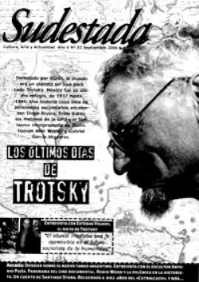

Buscar
Nace un nuevo cine documental argentino
Partiendo de un respeto común por la estética, el sonido, y el guión; un puñado de recientes producciones locales han modificado de manera radical la rígida y perezosa estructura de un género que parecía condenado a naufragar en sus propios errores. Convocados por Sudestada, Pablo Ratto (El Último Confín), Sergio Iglesias (Bialet Massé: Un siglo después), Caroline Neal (Si sos brujo: una historia de tango), Ricardo Preve (Chagas y Mondovino) y Ulises de la Orden (Río Arriba), estos jóvenes realizadores símbolo de esta movida, reflexionaron sobre el lugar actual del documental, los requerimientos del público y los desafíos a futuro de la producción independiente.
Edición N° 52
Septiembre 2006
Revista bimensual
Comprar edición impresaSumario
- Los últimos días de Trotsky
- Lejos del panfleto, cerca del debate
- Tango joven de vanguardia
- Nace un nuevo cine documental argentino
- Robin Wood: luces y sombras
Compartir Articulo
Es posible que el rótulo deliberadamente arbitrario que titula este artículo pueda parecer, a simple vista, una definición imprecisa y carente de sentido. Razones para cuestionarlo hay a raudales: históricamente, los diferentes movimientos cinematográficos significaron, en el más amplio sentido del término, bastante más para la humanidad que este pequeño núcleo de filmes locales, aquí definidos de manera caprichosa como parte de un nuevo cine documental nacional. También sería justo señalar, para regocijo de los escépticos, la dificultad que supone encontrar entre dichas obras coincidencias temáticas, objetivos comunes, apuestas estéticas compartidas. Pero es lógico, los directores de esas obras ni siquiera pertenecen a una misma generación, no se conocían (al menos hasta hace muy poco) entre ellos, y hasta alguno ha nacido o vive actualmente fuera del país. Es innegable, las coincidencias son casi inexistentes. Tampoco se vislumbra un conflicto motivador como en las vanguardias típicas del cine ficcional. Mucho menos, algo parecido a esa necesidad criolla por documentar que emergió post 2001 y que dejó un amplio legado de filmes sobre la crisis social, política y económica argentina. No hay nada de eso. Entonces, ¿por qué hablar de un novedoso "movimiento" documentalista argentino cuando nada parece aglutinar a este conjunto de obras? Muy simple: sus directores, guiados por una indescriptible pasión por el Cine, así, con mayúsculas; y, sobre todo, a través de una innata apertura mental y conceptual lograron, inconscientemente, sacudir las bases del género tomando al documental como una película y no como un collage de difusas imágenes en blanco y negro con pretensiones más dogmáticas que artísticas; y entendiendo que las necesidades de renovación que impone el paso del tiempo no pueden quedar de lado cuando se trabaja en función del público. Alguna vez, el dramaturgo alemán Bertold Brecht apuntó que: "la realidad cambia constantemente, por lo que, para reflejarla, es necesaria la modificación y actualización de los modos de representación". Esta nueva camada de documentalistas así lo entendió y por eso su esfuerzo es digno de reverencia.
Historias, nada más y nada menos
Sobre una de las mesas de la isla de edición de Mambo Producciones descansa una copia del brillante film docu-ficcional más impactante del año. "Capturando a los Friedman", anuncia el trazo indeleble negro sobre el blanco absorbente del DVD virgen: prolija y espeluznante edición de videos hogareños de una familia de abusadores de niños, obra de Andrew Jarecki. Una ambientación casual pero llamativamente apropiada para la charla que se viene. Antes de que se encienda el grabador y luego de haber intercambiado sus respectivas películas, Sergio Iglesias, hurgador de planos secuencia extensos, escucha la descripción precisa de Pablo Ratto ,dueño de casa, acerca de cómo se filmó El Arca Rusa, de Alexander Sokurov, película en una sola toma de hora y media de duración. "La voy a ver", promete el director de Bialet Massé: un siglo después, mientras con similar entusiasmo, el responsable principal de El último confín busca en su memoria más planos de ese tipo. Se tientan a seguir hablando de cine, entre documentales y nuevos estrenos, desfilan sin prejuicios. Prácticamente no tienen diferencias conceptuales en sus gustos, coinciden en el marco de sus reflexiones sobre las nuevas formas del documental...
¿El hecho de que sus películas actúen como punto de partida y no a modo de clase magistral sobre un tema fue premeditado?
Sergio Iglesias: No, para nada. Me parece que actuar como generador de interés debería ser el ideal de toda película. Es más, Bialet... fue declarada de interés educativo y yo te puedo asegurar que mi intención no fue hacerla pedagógica. Que sirva como herramienta para educar está bárbaro, pero no considero que una película tenga que cumplir con ese objetivo. Por eso no me gustan los documentales de investigación que te muestran fechas, datos y acontecimientos, pero que no te hacen pensar. Es bueno salir del cine y tener ganas de saber más, de averiguar si lo que yo te conté es verdad o no.
Pablo Ratto: Estoy totalmente de acuerdo. La gente quiere que vos le des respuestas y creo que nuestra función es, más bien, generar preguntas y que ese estado de duda te obligue a pensar, para que vos mismo encuentres los por qué. Y esto sí fue algo premeditado: no cerrar la historia para que quede una inquietud. No intenté que luego de ver El último confín, el espectador adquiriera un compromiso en favor de la causa de los desaparecidos.
Cuando en 1999, Wim Wenders concluyó en Cuba la filmación de Buena Vista Social Club, a nadie se le ocurrió preguntarle si los ideales socialistas de la Isla o un fanatismo por Fidel Castro se reflejaban en la película. Era, simplemente, un justo homenaje al mítico Ibrahim Ferrer y a la más añeja troupe de ejecutores del son cubano; el reflejo de una historia, de un tema concreto, no una cuestión de simpatías políticas.
Pablo Ratto eligió contar en El último confín la historia de familiares de víctimas de la dictadura que se reencuentran con los restos de sus seres queridos hallados en la fosa común del cementerio de San Vicente, Córdoba. Sin embargo, todo el mundo dio por sentado que el director era militante o tenía algún familiar desaparecido. Nada de eso había pasado en su vida, lo suyo no era el cine de perfil social como el del enorme Raymundo Gleyzer o un ejercicio militante como la mítica Cazadores de utopías. Ratto buscaba otra cosa: "Traté de utilizar el hecho que estoy contando como excusa para hablar de la emoción, que es en realidad el tema de fondo. Retrato gente que está fuertemente conmocionada por algo que le sucedió, pero ese acontecimiento, en mi película, no es central; y sí es fundamental el sufrimiento que padecieron los familiares en los últimos veintisiete años, una conmoción que transformó sus rostros". Pablo buscó ir bastante más allá de la simple documentación del hecho periodístico con la pretensión de que "una vez finalizada la película se pudiese separar ese rictus en las caras, del hecho concreto e inalterable de tener un familiar desaparecido", explica....
(La nota completa en la edición gráfica de Sudestada Nº52, Septiembre 2006)
Comentarios
Leandro Renou
Articulos más vistos


LIBRERÍA SUDESTADA

Colección infantil

Distribuidora de Libros

Suscripción

Sudestada en URUGUAY

Otros articulos de esta edición
Tango joven de vanguardia
Desde hace algunos años, el tango fue sumando a sus filas infinidad de músicos jóvenes. Poco a poco, las nuevas ...
Robin Wood: luces y sombras
Prolífico narrador de aventuras, buque insignia de la influyente editorial Columba durante décadas en el país, la figura de Robin ...
Los últimos días de Trotsky
Derrotado por Stalin, el mundo era un planeta sin visa para León Trotsky. México fue su último refugio, de 1937 ...
Lejos del panfleto, cerca del debate
Desde el primer número de nuestra publicación intentamos (y no siempre conseguimos), aportar con humildad nuestra voz a un escenario ...